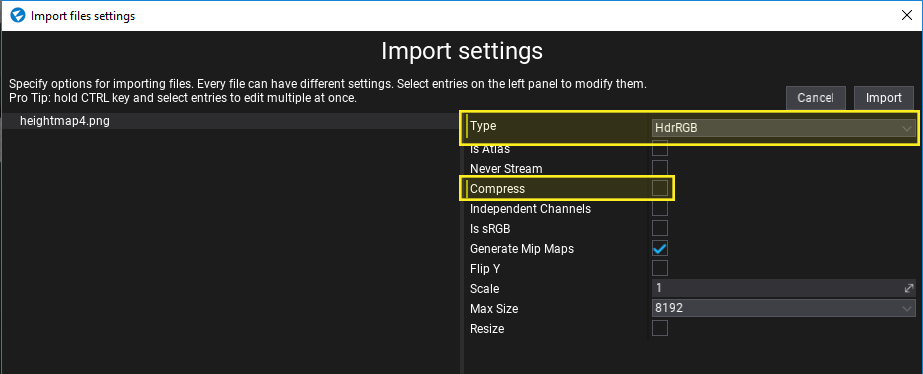
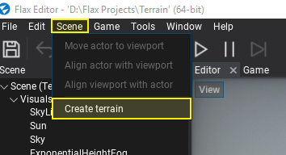
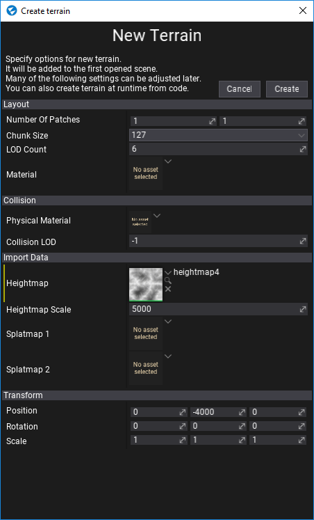
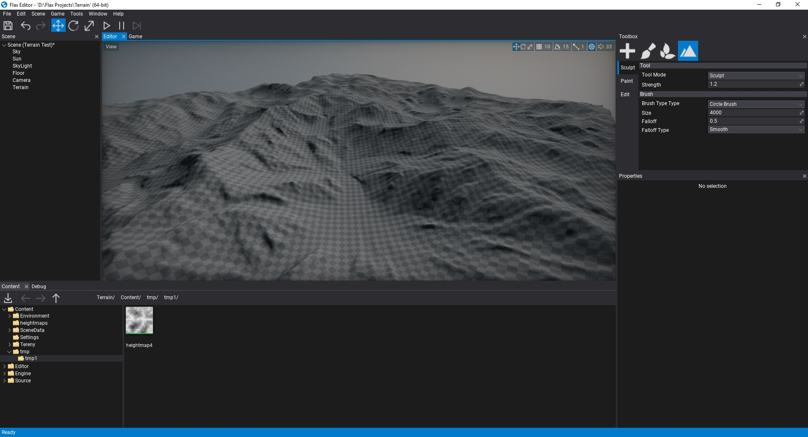

HOWTO: Import terrain
In this tutorial, you will learn how to generate a terrain from a heightmap texture.
1. Import heightmap
Firstly you will need to import a heightmap texture to your project. You can follow those instructions to learn how to do it.
When importing .RAW files importer will hint to use HdrRGBA format without compression which gives better quality to terrain (also, RAW files needs to have the square size). If you import grayscale heightmap please ensure to use HDR format as well and disable compression to reduce artifacts in the generated terrain. You heightmap after importing won't be used by the engine so don't lock yourself to a certain resolution.
Flax supports any heightmap size as a heightmap.

If you don't have any heightmap you can download this image:
2. Open scene
Create or open existing level to add new terrain to it. Flax supports many terrains per scene so there is no limit.
3. Open terrain creator dialog
Use Main Menu button Scene -> Create terrain.

4. Adjust options
Use this dialog to adjust the initial terrain properties. Select chunk size and amount of patches to create. Most of the following properties can be adjusted later. This window supports creating terrain without imported heightmap as shown in this tutorial.
To learn more about terrain patches, chunks and technical details see related documentation here.

4. Generate terrain
Press Create button and see new terrain added to your scene. Now you can edit and paint it!
